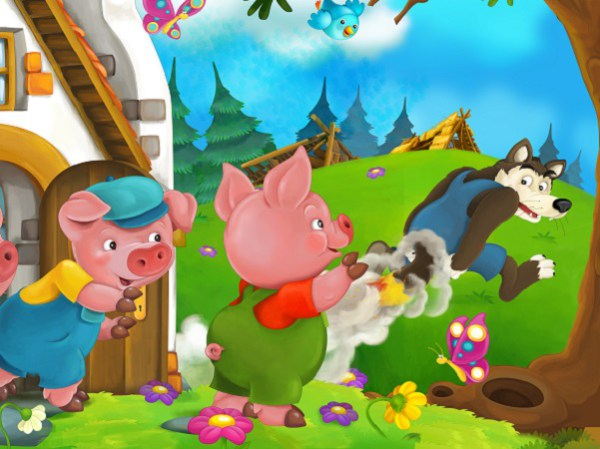

Al lado de sus padres , tres cerditos habían crecido alegres en una cabaña del bosque. Y como ya eran mayores, sus papas decidieron que era hora de que construyeran , cada uno, su propia casa. Los tres cerditos se despidieron de sus papas, y fueron a ver como era el mundo, y encontraron un bonito lugar cerca del bosque donde construir sus tres casitas.El primer cerdito, el perezoso de la familia , decidió hacer una casa de paja. En un minuto la choza estaba ya hecha. Y entonces se fue a dormir.
El segundo cerdito , un glotón , prefirió hacer la cabaña de madera. No tardo mucho en construirla. Y luego se fue a comer manzanas.El tercer cerdito , muy trabajador , opto por construirse una casa de ladrillos y cemento. Tardaría mas en construirla pero estaría mas protegido. Después de un día de mucho trabajo, la casa quedo preciosa. Pero ya se empezaba a oír los aullidos del lobo en el bosque.No tardo mucho para que el lobo se acercara a las casas de los tres cerditos. Hambriento , el lobo se dirigió a la primera casa y dijo: – ¡Ábreme la puerta! ¡Ábreme la puerta o soplare y tu casa tirare!.Como el cerdito no la abrió, el lobo soplo con fuerza, y derrumbo la casa de paja.El cerdito, temblando de miedo, salio corriendo y entro en la casa de madera de su hermano. El lobo le siguió.Y delante de la segunda casa, llamo a la puerta, y dijo:– ¡Ábreme la puerta! ¡Ábreme la puerta o soplare y tu casa tirare!
Pero el segundo cerdito no la abrió y el lobo soplo y soplo, y aunque la casita de madera aguantó mucho más que la casita de paja, al final la casita se fue por los aires.Asustados, los dos cerditos corrieron y entraron en la casa de ladrillos de su otro hermano. Pero, como el lobo estaba decidido a comérselos, llamo a la puerta y grito: – ¡Ábreme la puerta!¡Ábreme la puerta o soplare y tu casa tirare! Y el cerdito trabajador le dijo:– ¡Soplas lo que quieras, pero no la abriré!Entonces el lobo soplo y soplo. Soplo con todas sus fuerzas, pero la casa ni se movió. La casa era muy fuerte y resistente.
El lobo se quedo casi sin aire. Pero aunque el lobo estaba muy cansado, no desistía. Después de dar vueltas y vueltas a la casa, y no encontrar ningún lugar por donde entrar, pensó en subir al tejado, trajo una escalera , subió a la casa y se deslizo por la chimenea. Estaba empeñado en entrar en la casa y comer a los tres cerditos como fuera. Pero lo que el no sabía es que los cerditos pusieron al final de la chimenea, un caldero con agua hirviendo. Y el lobo , al caerse por la chimenea acabo quemándose con el agua caliente. Dio un enorme grito y salió corriendo y nunca mas volvió por aquellos parajes. Así los cerditos pudieron vivir tranquilamente. Y tanto el perezoso como el glotón aprendieron que solo con el trabajo se consigue las cosas. Y enseguida se pusieron manos a la obra, y construyeron otras dos casas de ladrillos, y nunca más tuvieron problemas con ningún lobo.
Entonces el lobo soplo y soplo. Soplo con todas sus fuerzas, pero la casa ni se movió. La casa era muy fuerte y resistente. El lobo se quedo casi sin aire. Pero aunque el lobo estaba muy cansado, no desistía. Después de dar vueltas y vueltas a la casa, y no encontrar ningún lugar por donde entrar, pensó en subir al tejado, trajo una escalera , subió a la casa y se deslizo por la chimenea. Estaba empeñado en entrar en la casa y comer a los tres cerditos como fuera. Pero lo que el no sabía es que los cerditos pusieron al final de la chimenea, un caldero con agua hirviendo. Y el lobo , al caerse por la chimenea acabo quemándose con el agua caliente. Dio un enorme grito y salió corriendo y nunca mas volvió por aquellos parajes. Así los cerditos pudieron vivir tranquilamente. Y tanto el perezoso como el glotón aprendieron que solo con el trabajo se consigue las cosas. Y enseguida se pusieron manos a la obra, y construyeron otras dos casas de ladrillos, y nunca más tuvieron problemas con ningún lobo.
Contacta con el autor